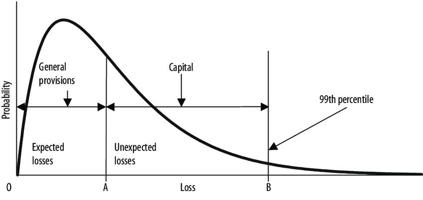
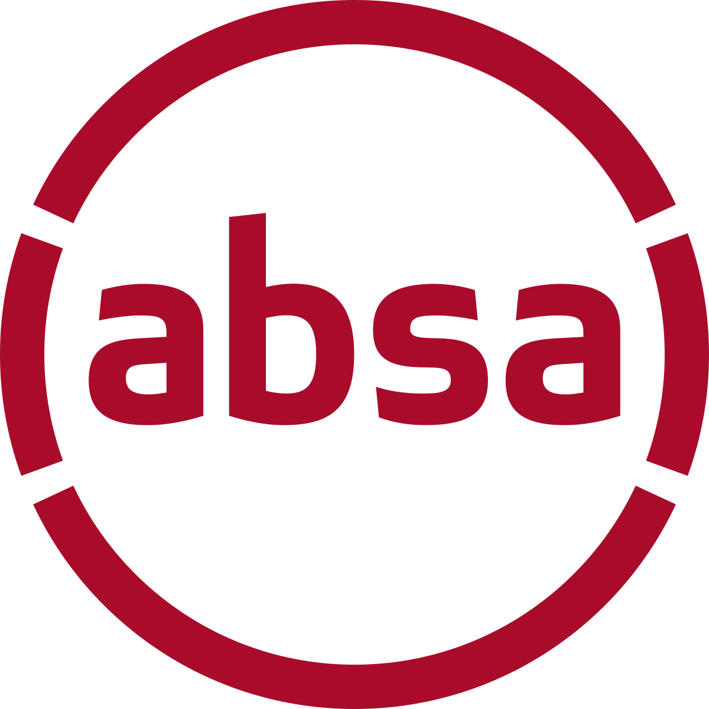
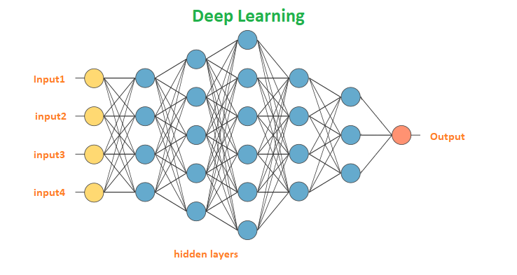

Interest Rate Forecasting Dashboard
EARNINGS AT RISK ● MACHINE LEARNING ● DEEP LEARNING ● PYTHON ● STREAMLIT
Currently, I am working as a Financial Engineer at Riskworx (Pty) Ltd a consulting firm, where I am a Quantitative Developer in the ABSA (Absa Group Limited, and originally Amalgamated Banks of South Africa under Barclays – the second largest bank in Africa) Quantitative Analytics team using my programming and C# skills to build pricing capabilities for various loan products in the SIGMA library. Here I am gaining valuable credit risk and analytical experience regarding metrics surrounding corporate loans. These include PDs, LGDs, EAD, Economic Capital, Standardised Capital, RWA, RORWA, RORC, Equity Endowment, IFRS9, BASEL requirements and P&L return statements. I also gained experience in Model Validation while contributing to the FRTB Value at Risk migration at ABSA where I was tasked to do validation on interest rate and cross-currency swaps using Front Arena, RiskWatch, R and Excel.
Additionally, I have also contributed to the development of an FX Dashboard using RShiny and MySQL that is used by the front office traders daily. The dashboard creates daily and monthly reports of summary statistics concluded of daily and monthly trades. Lastly, I have also presented an abstract for the paper (A Machine Learning Approach to Reducing the Costs of Peer-to-Peer Credit Risk Management - An Application of Gradient Boosted Tree Algorithms) at the Virtual African Finance Association Conference (11-12 May 2021). The algorithms were designed in Python using various machine learning libraries such as TensorFlow and Keras.
I have obtained valuable coding skills. These include: R (throughout my University career), Python (specifically in Machine Learning and Deep Learning algorithms that were used in my Thesis), SQL (for data management), SAS (for credit risk management modules), and Excel/VBA (for data manipulation and design). In my free time I focus on increasing my quantitative and coding knowledge through various projects that can be viewed below. This portfolio contains links to to these projects via my GitHub profile , my work experience, my LinkedIn page , my Education, and my future aspirations such as Medium technical writing.
EARNINGS AT RISK ● MACHINE LEARNING ● DEEP LEARNING ● PYTHON ● STREAMLIT

CREDIT RISK ● LINEAR REGRESSION ● PROBABILITY OF DEFAULT MODELLING ● PYTHON ● STREAMLIT
PRICING LIBRARY ● DERIVATIVES ● EXCEL ADD-IN ● C#
CREDIT RISK ● MACHINE LEARNING ● TENSORFLOW ● CUDA

PRICING LIBRARY ● LOAN PRICING ● BASEL ● R ● C#

DEEP LEARNING ● NEURAL NETWORKS ● IMAGE CLASSIFICATION ● PYTHON ● TENSORFLOW
Stellenbosch University
Nov 2020
Thesis: A Deep Convolutional Neural Network Architecture for Image Classification.
Stellenbosch University
Nov 2018
Research: Visualisation of Multidimensional Financial Data Through Biplots.
Stellenbosch University
Nov 2017